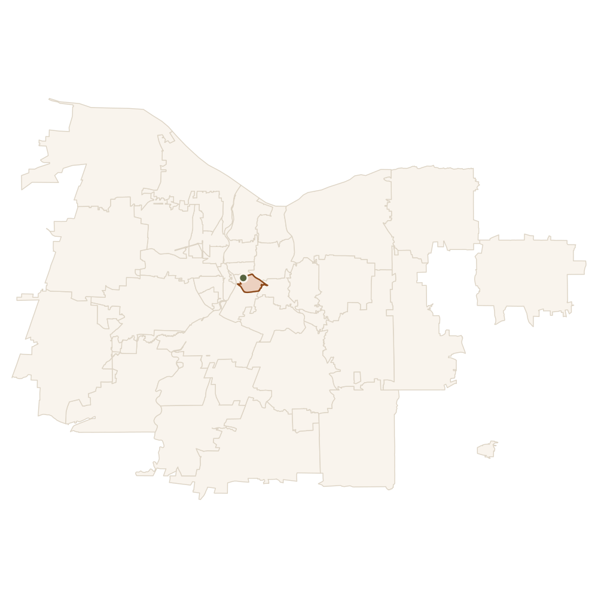

Rochester, NY · first market live
Know where to invest before you spend a dollar on a house.
Most first-time investors pick a zip code off a gut feeling or a friend's tip. RentalInsights reads the actual turnover, pricing, and sale history behind every Rochester zip code and hands you a straight answer: here's where your money works, and here's the math to prove it.
Free to use. No listing fees, no agent required to look.

The hard part was never the math. It was knowing where to point it.
Cap rate calculators are everywhere. What's missing is the input that actually decides the outcome — which neighborhood, block, or zip code even deserves a calculation. We talked to first-time investors before building anything, and the pattern was the same every time.
"I had five zip codes I was choosing between and no real way to compare them side by side. Every source told me something different."
"I didn't want another dashboard with forty metrics. I wanted someone to just tell me which one, and why."
One guided path, not a research project.
Answer three questions about your budget and priorities, and we walk you straight to a market and a number.
-
Tell us your budget and priorities
A short guided quiz — how much you have to invest, and whether you're after cash flow, appreciation, or something you can manage without much hassle.
-
See the heatmap, ranked to your answers
A color-coded map of Rochester built from real turnover and pricing data, with zip codes ranked against what you told us — not a generic top-ten list.
-
Run the numbers before you commit
Drop a property or a zip code median into the cash-flow calculator and see mortgage, cap rate, and cash-on-cash return before you talk to anyone.
Built from what's actually happening on the ground in Rochester.
Every number on this page and in the app comes from real listing and sale history — not survey estimates or a national dataset stretched to fit a local answer. That's also why we started with one city instead of fifty.
- 14607 leads the city in repeat rental turnover, a sign of consistent tenant demand.
- Rental and sale velocity is tracked per zip code, so "hot market" means measured, not implied.
- Coverage spans the city core and the greater metro — Fairport, Pittsford, Webster, Greece, and more.
Stop guessing which zip code. Start with the data.
It takes about two minutes to get your first ranked market.
Questions worth answering up front
Is this only for Rochester?
For now, yes. We'd rather be right about one market than vague about fifty. Rochester is where we started; more cities follow once the model holds up.
Do I need real estate experience to use it?
No. The guided quiz is built for a first-time investor with $30k–$100k to put to work, not someone who already knows which zip code they want.
Does it cost anything?
The heatmap, guided quiz, and cash-flow calculator are free to use right now.
Where does the data come from?
Public listing, sale, and rental history for properties across all 46 Rochester-area zip codes, refreshed as new data comes in.